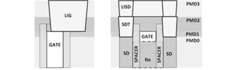
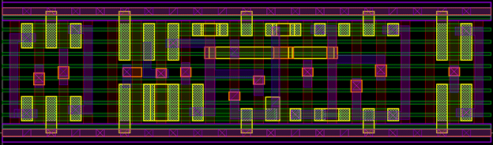
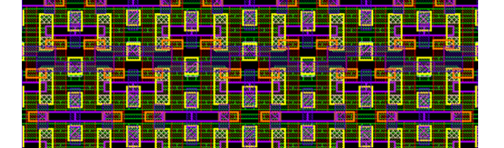

NPU · ASAP7 7 nm · Clock gating · Scan DFT · in progress
NVIDIA NVDLA 7 nm Full-Chip Implementation: Low-Power, PPA-Optimized, DFT
A second pass at NVIDIA’s open-source deep-learning accelerator, this time on the open ASAP7 7 nm predictive PDK, so the timing numbers and cell geometry here can be shown as they are.
Target 1.0 ns, built on the unmodified ASAP7 kit. Partition A meets 1.0 ns at synthesis with 128 scan chains and 0.2 mW leakage. C (with memory self-test), M, O and P are in synthesis now.
How NVDLA works
ARCHITECTURENVDLA (NVIDIA Deep Learning Accelerator) is a fixed-function inference engine that NVIDIA open-sourced in 2017. A host CPU programs it through a register interface (CSB), points it at feature maps and weights in memory, and the hardware runs a layer (convolution, activation, pooling, normalization) without the CPU touching the data.
The convolution core does most of the work. CDMA streams feature-map data and weights from memory into the on-chip convolution buffer (CBUF). The sequencer (CSC) reads them back in the order the math needs, decompressing sparse weights on the way, and feeds the MAC array (CMAC), split into two identical halves. CACC sums partial results across channels.
Results then flow through the post-processing pipeline: SDP applies per-element operations (bias, batch norm, ReLU/PReLU, element-wise add), PDP does max/min/average pooling, and CDP does cross-channel local response normalization using lookup tables for exp/log. BDMA and RUBIK copy and reshape tensors between layers.
For physical design, NVDLA is cut into five partitions, synthesized independently here. The colours below show which partition each block lives in, and why partition C (448 SRAM macros for CBUF) and partition O (four LUT engines in CDP) were the hard ones.
NVDLA dataflow, coloured by synthesis partition
Synthesis at 1 GHz
RESULTSGenus, typical corner, 1.0 ns clock, no clock uncertainty or IO budgets, unmodified ASAP7 libraries (RVT and LVT). A partition counts only when its final reports are in; running partitions show no numbers yet.
| Partition | Worst slack | Cells | Scan chains | Scan flops | Off-chain flops | Clock gates | Leakage |
|---|---|---|---|---|---|---|---|
| A | 0 ps (met) | 1.05M | 128 | 89,997 | 7,798 | 2,369 | 0.205 mW |
| C | running, with MBIST inserted | ||||||
| M | running | ||||||
| O | running | ||||||
| P | running | ||||||
Off-chain flops are flip-flops with no scan version in the kit (async set/reset, and one drive-strength variant). They lower test coverage; the ATPG numbers will show by how much.
The popcount path
RTL FIXPartition C’s worst path came from one structure in the sequencer’s weight decompressor. To find where each surviving weight goes, it computes the prefix popcount of a 128-bit sparsity mask: the number of ones in bits 0..N, for all 128 values of N. The RTL writes these as 128 separate long additions, and synthesis turned them into a ripple chain about 80 gates deep.
No tool setting halves an 80-gate path, so I rebuilt it as a parallel prefix: an 8-bit count inside each of 16 groups, then a 4-level Sklansky tree over the group totals. Same outputs, same clock cycle. I checked it against a bit-by-bit reference in Xcelium over 20,000 random and corner-case vectors (zero mismatches). The rewritten module is part of the RTL used for the current runs.
Before and after: the same count, wired two ways
Inside 7 nm
ASAP7 GEOMETRYASAP7 models a 7 nm FinFET process: fins, gate, and a middle-of-line contact stack (LIG, LISD, SDT) between the transistors and metal 1. Standard cells are 0.27 µm tall; a row as wide as a human hair (about 70 µm) fits roughly 50 scan flip-flops.

FinFET and middle-of-line stack

ASAP7 standard cell layout

Placed cells at density
Images above: ASAP7 PDK, Arizona State University (asap.asu.edu).
Scan on the stock kit
Stock ASAP7 scan flops lack the test_cell description synthesis needs, and the kit stays read-only. So synthesis maps to plain flops, then a script swaps each one for the kit’s own SDFH/SDFL scan flop and stitches 128 chains, with no library changes. Flops with async set/reset have no scan version in the kit, so they stay off the chains (7.8k in A, about 101k in P). That test-coverage gap will be reported, not hidden.
Hidden SRAM pins
The kit SRAM has five pins, sdel[4:0], that appear only in its LEF, not in its Verilog or Liberty. I traced them through the kit GDS: they select the delay from word-line enable to sense-amp enable. They are tied to 00000, the longest delay and the most read margin, with one tie cell per macro.
Multi-Vt selection
Low-Vt cells are faster and leakier. Synthesis gets both RVT and LVT logic cells and spends leakage only on critical paths; partition A ends at 0.205 mW leakage.
SRAM from banks
CBUF’s dual-ported RAMs are built from pairs of ASAP7 single-port SRAM banks through wrappers I wrote and verified in simulation: 448 macro instances in partition C.
Low power, test and PPA
IMPLEMENTATIONAll five partitions share one synthesis script, so each gets the same treatment.
Clock gating
doneNVDLA’s own RTL clock gates are imported as real gating cells, and synthesis adds more where at least 3 flops share an enable (up to 64 per gate). Partition A ends up with 2,369 clock gates. Each gate’s test-enable is wired to scan-enable so gated flops stay testable.
Scan chains
redoing128 scan chains per partition, built from the kit’s own scan flops with no library edits. They are stitched after mapping and written out as SCANDEF for place-and-route to reorder. Partition A is done (89,997 scan flops); equivalence checking (Conformal) and chain and ATPG checks (Modus) come next.
MBIST
in progressGenus’s memory BIST needs a license that isn’t installed here, so I used Siemens Tessent MemoryBIST with a memory description I wrote for the kit SRAM. On a one-SRAM test design the BIST passed in simulation, then caught an injected stuck-at fault. It is now inserted into partition C’s RTL: 448 SRAMs, 16 controllers (one per CBUF bank), driven through an IJTAG port. C is being resynthesized with it.
PPA optimization
ongoingTiming first, with area and leakage kept in check: RVT/LVT cell selection, the popcount rewrite above, and high-effort mapping and optimization. The clock period and constraints stay fixed; misses get fixed in the design or the flow, not by relaxing the target.
Place-and-route plan
FLOORPLANEach partition is placed and routed on its own as a hard macro, then the chip is assembled from those blocks. The floorplan is mirror-symmetric: one MAC partition layout is used twice, with MB flipped. Block outlines come from synthesis area; pins sit only on the edges that face the block they connect to, taken from the top-level netlist.
The bottom row comes from tracing the netlist. The two MAC partitions are not wired the same way: MA’s data is retimed through O and P (2,423 and 1,434 signals), while MB talks straight to C and A. With A under MA, 4,818 signals had to cross a block that sat between their ends; swapping A and P (same outline, so the chip stays symmetric) leaves only A–P (1,950 signals, under O), the minimum this 3×2 arrangement allows. Block widths were also adjusted by 0.3% to whole multiples of every routing pitch, so the mirrored MB lands on the top-level track grid.
Where each block is
Power grid: the ASAP7 reference recipe (M1/M2 rails, M3–M6 stripes) plus M7 stripes for the chip-level grid to land on. Known issue to measure: with the stock tech LEF, the router misreads some via-enclosure rules on V3/V5 and flags vias that I measured as legal against the ASAP7 design manual. Those flags will be counted on the first new route and judged against the kit’s design rules, not edited away.
Next
ROADMAPFinish resynthesis on the stock kit
A is done (meets 1.0 ns, 128 chains). C with MBIST, M, O and P are running; each one has to meet 1.0 ns with no clock or constraint changes.
Check every netlist
Conformal LEC against the RTL with scan off (must be 0 non-equivalent points), Modus chain checks, and ATPG stuck-at coverage per partition, with the off-chain async flops counted honestly.
Verify MBIST on gates
Tessent patterns simulated in Questa on C’s gate netlist, including one full-address run and fault injection, plus timing at 1 GHz through the BIST muxes in front of the SRAMs.
Block place-and-route
Init, placement, clock tree, routing and signoff for each partition at 1.0 ns, checking the router’s design-rule count at every stage, not just timing. Then each block is exported as a hard macro.
Chip assembly
Six macros (MAC partition used twice, mirrored) with an M8/M9 power mesh checked for IR drop in Voltus, 128 chip-level scan chains and the MBIST port, then the pad ring.
Signoff
SI-aware timing with Quantus extraction. DRC and LVS need the ASAP7 Calibre decks, which are not part of the kit download; until they are run, physical verification is reported as not run.
Compare with the 12 nm NVDLA RTL-to-GDSII project, which went through full place-and-route under a licensed PDK.